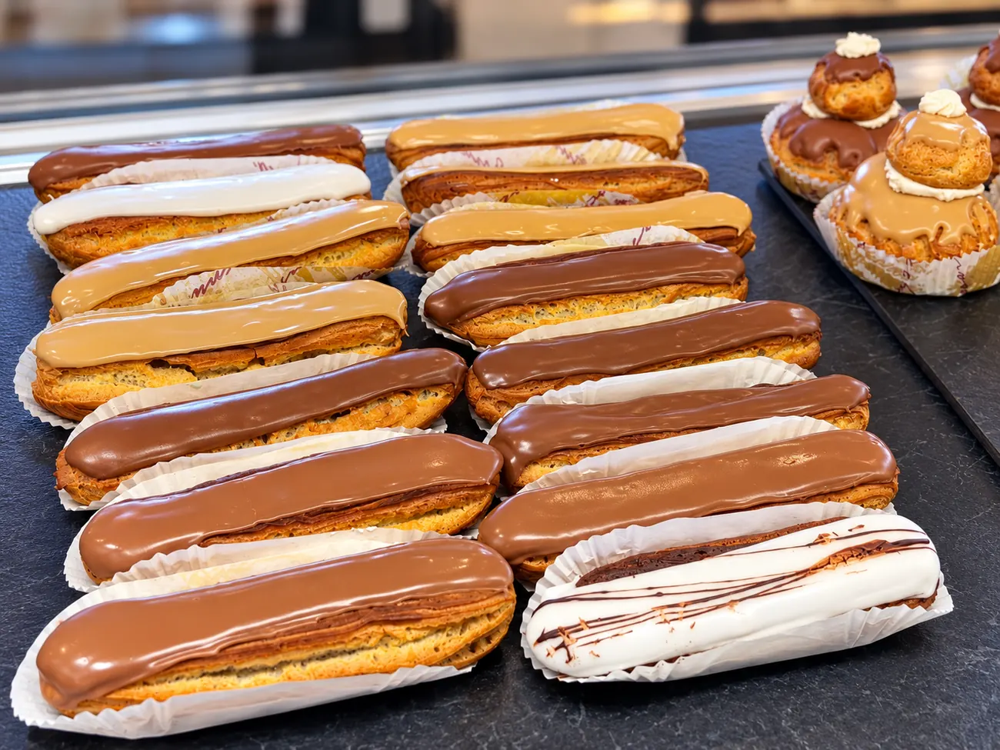
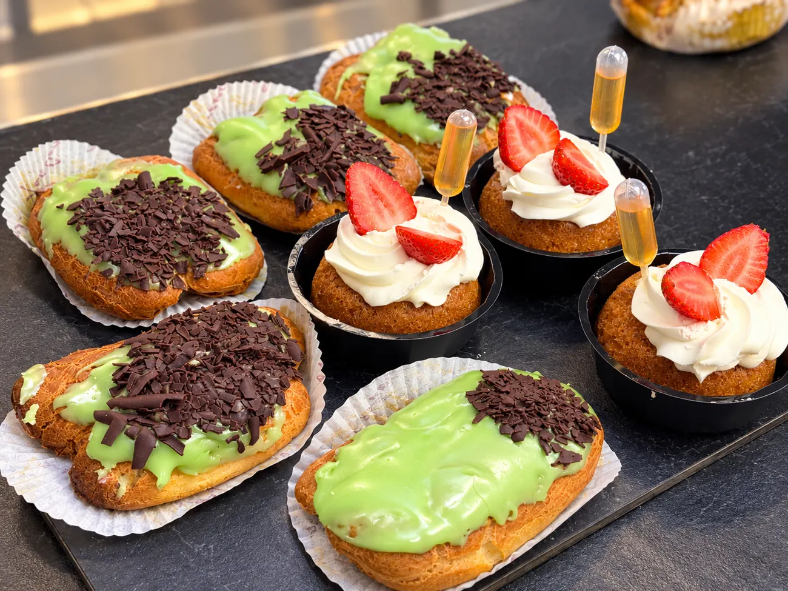
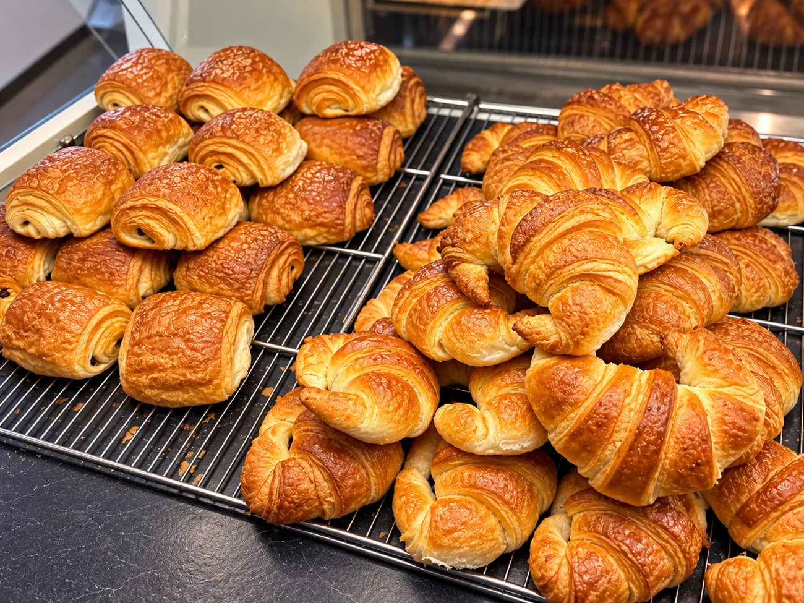
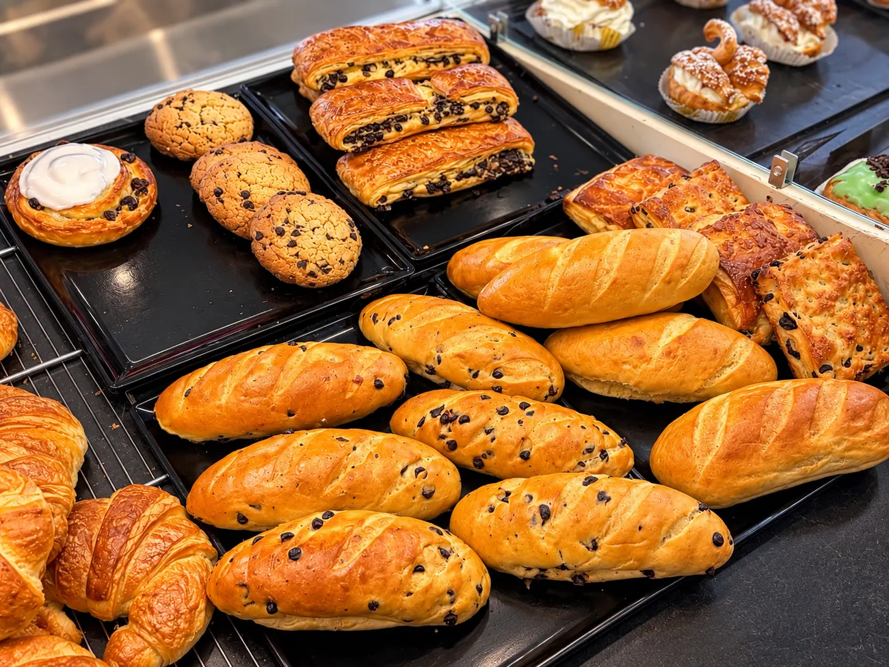
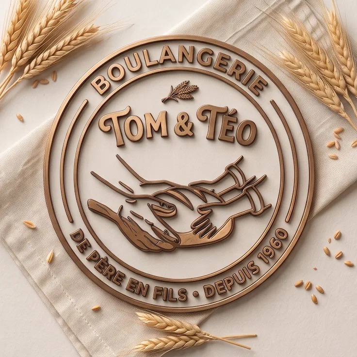

La cramiqueau sucre et aux raisins
« La cramique (pain gateau) est délicieuse !! Sucre raisin pour moi, mangée le lendemain au petit déjeuner elle était encore parfaite ! »
Vianney, avis Google 5 étoilesBoulangerie · pâtisserie · Hem
Place de la République, à Hem.
Pain complet, cramique au sucre et aux raisins, religieuses, éclairs et glands : la nouvelle boulangerie de la place de la République, que les voisins ont accueillie à bras ouverts.
Ouvert dès 7 h, six jours sur sept
Trois noms reviennent dans les avis laissés sur Google depuis l'ouverture. Les voici, avec les mots de ceux qui les ont goûtés.
« La cramique (pain gateau) est délicieuse !! Sucre raisin pour moi, mangée le lendemain au petit déjeuner elle était encore parfaite ! »
Vianney, avis Google 5 étoiles« Hier nous avons goûté les religieuses, excellentes! »
optique epeule, avis Google 5 étoiles« Le pain est excellent, pas trop cuit , et il se conserve sans problème. »
optique epeule, avis Google 5 étoilesCe que montrent les photos prises au comptoir de Tom & Téo : les pâtisseries alignées sur l'ardoise, les viennoiseries sur la grille.



« J'adorais celle des précédents propriétaires, je ne suis pas déçu !! »
Vianney, à propos de la cramique · avis Google 5 étoiles

Sur le sceau de Tom & Téo, une grande main et une petite travaillent ensemble entre les épis de blé, et la devise de la maison s'y lit en lettres rondes. Place de la République, à Hem, la boulangerie a repris le flambeau d'une adresse que le quartier connaissait déjà, et les voisins l'ont tout de suite dit :
« Bravo pour cette ouverture, nécessaire à cet endroit de Hem. […] Nous sommes ravis de vous avoir près de chez nous et vous souhaitons une belle réussite ! »
« J’y suis passée le jour de l’ouverture et j’ai eu droit à un superbe accueil. »
Ce que les clients ont écrit sur la fiche Google de la boulangerie.
Ouvert dès 7 h, fermé le mardi
| lundi | 7 h – 19 h |
|---|---|
| mardi | fermé |
| mercredi | 7 h – 19 h |
| jeudi | 7 h – 19 h |
| vendredi | 7 h – 19 h |
| samedi | 7 h – 13 h |
| dimanche | 7 h – 13 h |
24 place de la République, 59510 Hem · à deux pas de l'église Saint-Corneille